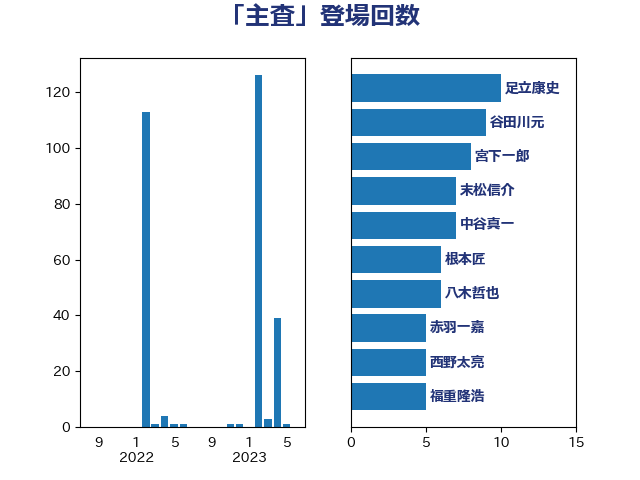

単語「主査」

| 足立康史 | 日本維新の会 | 10 回 |
| 谷田川元 | 立憲民主党 | 9 回 |
| 宮下一郎 | 自由民主党 | 8 回 |
| 末松信介 | 自由民主党 | 7 回 |
| 中谷真一 | 自由民主党 | 7 回 |
| 根本匠 | 自由民主党 | 6 回 |
| 八木哲也 | 自由民主党 | 6 回 |
| 赤羽一嘉 | 公明党 | 5 回 |
| 西野太亮 | 自由民主党 | 5 回 |
| 福重隆浩 | 公明党 | 5 回 |
| 牧島かれん | 自由民主党 | 5 回 |
| 斎藤アレックス | 国民民主党 | 5 回 |
| 岡本あき子 | 立憲民主党 | 5 回 |
| 辻清人 | 自由民主党 | 4 回 |
| 萩生田光一 | 自由民主党 | 4 回 |
| 緒方林太郎 | 無所属 | 4 回 |
| 秋葉賢也 | 自由民主党 | 4 回 |
| 神津たけし | 立憲民主党 | 4 回 |
| 田中英之 | 自由民主党 | 4 回 |
| 池畑浩太朗 | 日本維新の会 | 4 回 |
| 江田憲司 | 立憲民主党 | 4 回 |
| 林芳正 | 自由民主党 | 4 回 |
| 斉藤鉄夫 | 公明党 | 4 回 |
| 小熊慎司 | 立憲民主党 | 4 回 |
| 北神圭朗 | 無所属 | 4 回 |
| 上田英俊 | 自由民主党 | 4 回 |
| 鷲尾英一郎 | 自由民主党 | 3 回 |
| 近藤和也 | 立憲民主党 | 3 回 |
| 田中良生 | 自由民主党 | 3 回 |
| 小林鷹之 | 自由民主党 | 3 回 |
| 馬場雄基 | 立憲民主党 | 2 回 |
| 鈴木英敬 | 自由民主党 | 2 回 |
| 鈴木俊一 | 自由民主党 | 2 回 |
| 金村龍那 | 日本維新の会 | 2 回 |
| 輿水恵一 | 公明党 | 2 回 |
| 赤嶺政賢 | 日本共産党 | 2 回 |
| 西村康稔 | 自由民主党 | 2 回 |
| 菊田真紀子 | 立憲民主党 | 2 回 |
| 笠浩史 | 無所属 | 2 回 |
| 笠井亮 | 日本共産党 | 2 回 |
| 穂坂泰 | 自由民主党 | 2 回 |
| 秋本真利 | 無所属 | 2 回 |
| 福島伸享 | 無所属 | 2 回 |
| 石橋林太郎 | 自由民主党 | 2 回 |
| 渡辺孝一 | 自由民主党 | 2 回 |
| 渡辺博道 | 自由民主党 | 2 回 |
| 深澤陽一 | 自由民主党 | 2 回 |
| 武部新 | 自由民主党 | 2 回 |
| 柿沢未途 | 無所属 | 2 回 |
| 松本尚 | 自由民主党 | 2 回 |
| 松本剛明 | 自由民主党 | 2 回 |
| 東国幹 | 自由民主党 | 2 回 |
| 本庄知史 | 立憲民主党 | 2 回 |
| 木原稔 | 自由民主党 | 2 回 |
| 川崎ひでと | 自由民主党 | 2 回 |
| 岬麻紀 | 日本維新の会 | 2 回 |
| 山崎正恭 | 公明党 | 2 回 |
| 小林茂樹 | 自由民主党 | 2 回 |
| 小宮山泰子 | 立憲民主党 | 2 回 |
| 宮路拓馬 | 自由民主党 | 2 回 |
| 大口善徳 | 公明党 | 2 回 |
| 塩崎彰久 | 自由民主党 | 2 回 |
| 堤かなめ | 立憲民主党 | 2 回 |
| 堀場幸子 | 日本維新の会 | 2 回 |
| 堀井学 | 自由民主党 | 2 回 |
| 国定勇人 | 自由民主党 | 2 回 |
| 吉良州司 | 無所属 | 2 回 |
| 吉田統彦 | 立憲民主党 | 2 回 |
| 勝目康 | 自由民主党 | 2 回 |
| 加藤竜祥 | 自由民主党 | 2 回 |
| 加藤勝信 | 自由民主党 | 2 回 |
| 伊藤達也 | 自由民主党 | 2 回 |
| 亀岡偉民 | 自由民主党 | 2 回 |
| 中野洋昌 | 公明党 | 2 回 |
| 齋藤健 | 自由民主党 | 1 回 |
| 青山周平 | 自由民主党 | 1 回 |
| 長妻昭 | 立憲民主党 | 1 回 |
| 鈴木宗男 | 日本維新の会 | 1 回 |
| 金子俊平 | 自由民主党 | 1 回 |
| 葉梨康弘 | 自由民主党 | 1 回 |
| 篠原孝 | 立憲民主党 | 1 回 |
| 稲津久 | 公明党 | 1 回 |
| 牧原秀樹 | 自由民主党 | 1 回 |
| 熊田裕通 | 自由民主党 | 1 回 |
| 浮島智子 | 公明党 | 1 回 |
| 浜田靖一 | 自由民主党 | 1 回 |
| 沢田良 | 日本維新の会 | 1 回 |
| 永岡桂子 | 自由民主党 | 1 回 |
| 杉本和巳 | 日本維新の会 | 1 回 |
| 島尻安伊子 | 自由民主党 | 1 回 |
| 大野敬太郎 | 自由民主党 | 1 回 |
| 古川禎久 | 自由民主党 | 1 回 |
| 保岡宏武 | 自由民主党 | 1 回 |
| 今枝宗一郎 | 自由民主党 | 1 回 |
| 中山展宏 | 自由民主党 | 1 回 |
| 三谷英弘 | 自由民主党 | 1 回 |